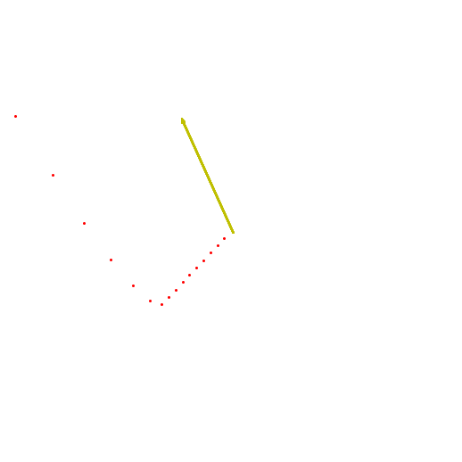

Exercise 1-1: Particle accelerating under suddenly turned-on force¶
# Particle accelerating under suddenly turned-on force
"""
This program shows the paths of a particle starting at the origin and travelling in a random direction. After 10 timesteps a force with a random
magnitude turns on and the particle accelerates in the direction of the force. The force magnitude and direction is shown by a yellow arrow.
Code translated from GW-BASIC provided in Exercise 1.1 of Stommel and Moore (1989)
author: Victoria McDonald
email: vmcd@atmos.washington.edu
website: https://github.com/torimcd/coriolis-sm
"""
import numpy as np
import matplotlib.pyplot as plt
from matplotlib.animation import FuncAnimation
from IPython.display import HTML
import random
%matplotlib inline
def rnd():
''' Helper function returns a random number between 0 and 1 '''
rand = random.uniform(0,1)
return rand
# Create new Figure and an Axes which fills it.
fig = plt.figure(figsize=(7, 7))
ax = fig.add_axes([0, 0, 1, 1], frameon=False)
ax.set_xlim(-100, 100), ax.set_xticks([])
ax.set_ylim(-100, 100), ax.set_yticks([])
force_scale_factor = 10
arrow_scale_factor = 10
trajectory_scale_factor = 10
# Initialize the particles at 0,0 with random velocity
x = 0
y = 0
dx = trajectory_scale_factor*(rnd()-0.5)
dy = trajectory_scale_factor*(rnd()-0.5)
ddx = 0
ddy = 0
# set the force magnitude
force_x_direction = force_scale_factor*(rnd()-0.5)
force_y_direction = force_scale_factor*(rnd()-0.5)
# set arrow parameters
arrow_x = 1
arrow_y = -1
arrow_dx = arrow_scale_factor*force_x_direction
arrow_dy = arrow_scale_factor*force_y_direction
# Construct the splot to update as the particle moves
pos, = ax.plot([], [], 'ro', ms=2)
# function to animate the particle
def update(frame):
global ddx
global ddy
global dx
global dy
global x
global y
# draw the arrow showing the force
arrow = ax.arrow(arrow_x, arrow_y, arrow_dx, arrow_dy, color='y', width=0.5, shape='full', visible=True)
# for first 10 steps, force is zero and arrow is not visible
if frame < 10:
force_x = 0
force_y = 0
arrow.remove()
else:
# after 10 steps force turns on
force_x = force_x_direction
force_y = force_y_direction
# update value of second dervatives
ddx = force_x
ddy = force_y
# update value of first derivative
dx = ddx + dx
dy = ddy + dy
# update position of x and y
x = dx + x
y = dy + y
# set the new position of the particle to x, y
pos.set_data(x, y)
# plot it again so it persists
ax.plot(x, y, 'ro', ms=2)
return pos
def init():
pos.set_data([], [])
return pos
# Construct the animation, using the update function as the animation director.
animation = FuncAnimation(fig, update, init_func=init, frames=20, interval=500, repeat=False, blit=False)
# convert to a video to be embedded in web page
HTML(animation.to_html5_video())
